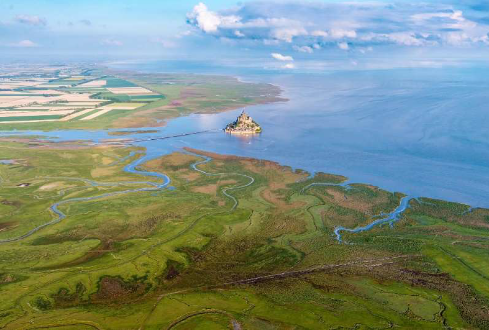
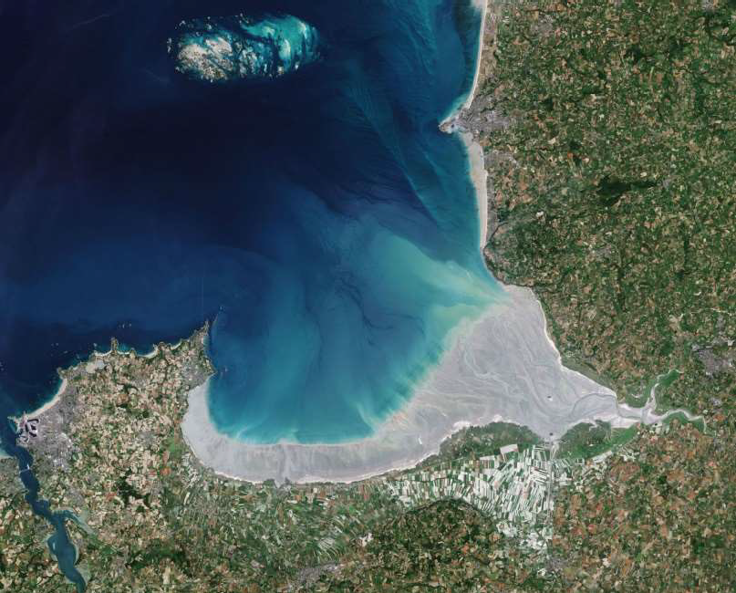
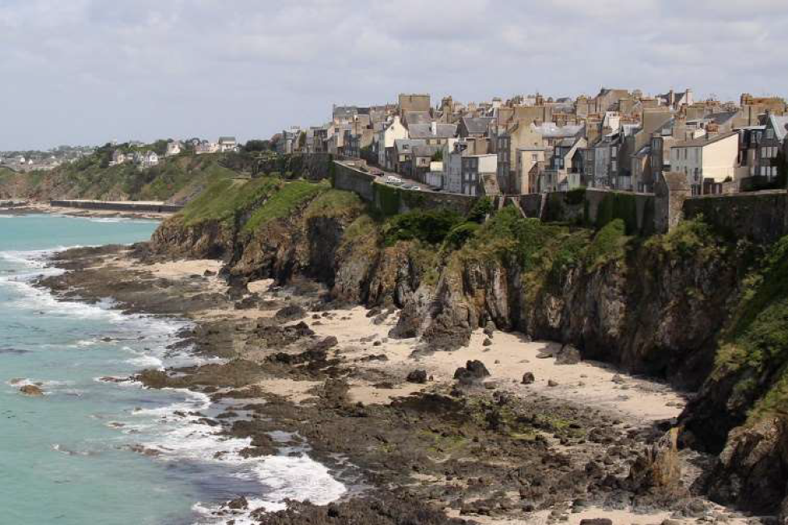
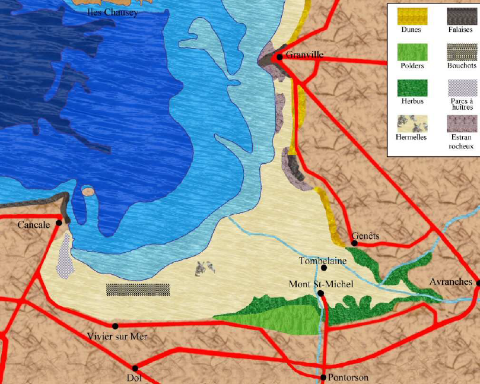
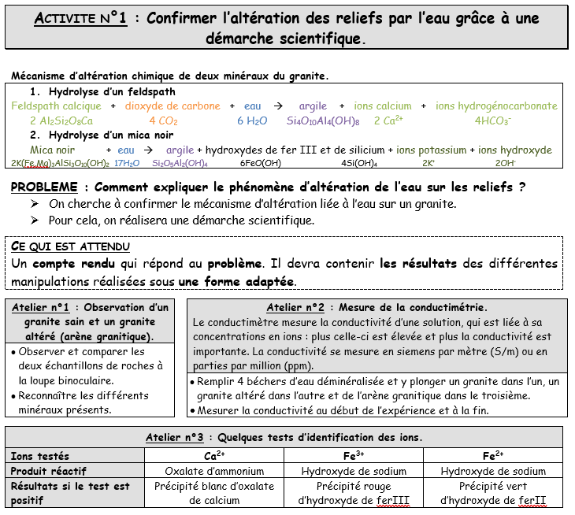
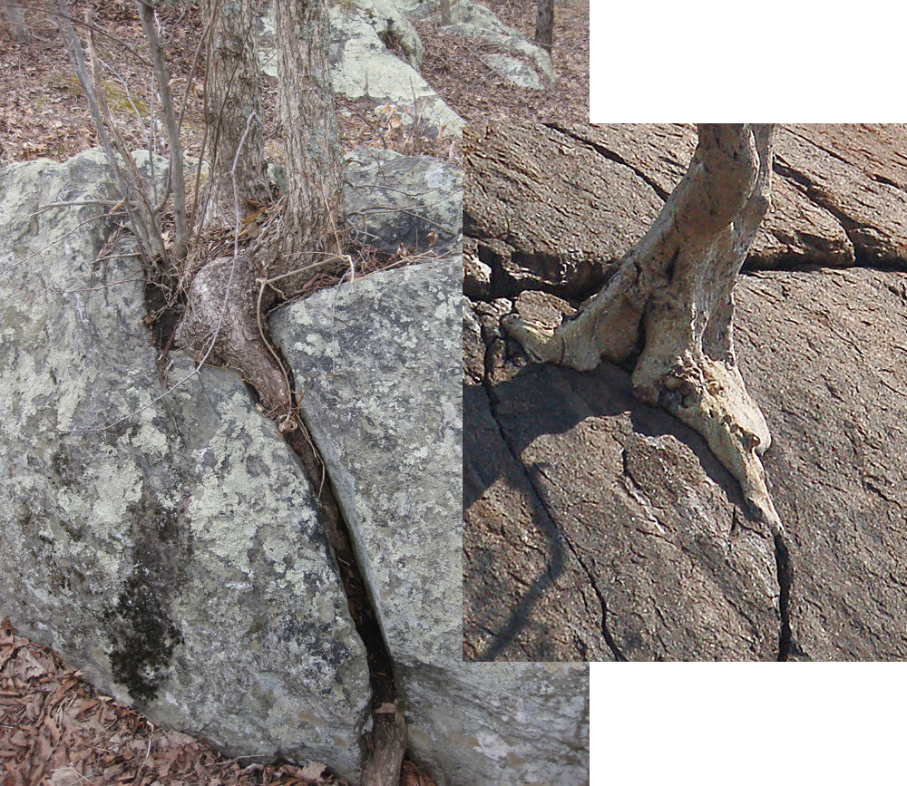
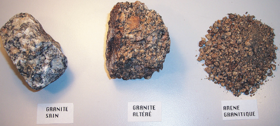
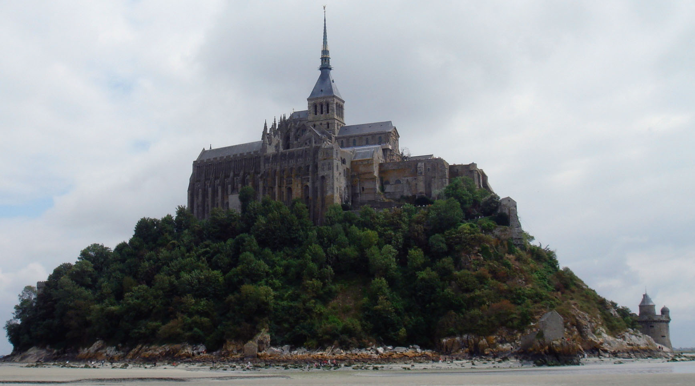

CE COURS N'EST PAS A DESTINATION DES SECONDES (version université)
Introduction : L'érosion est l'ensemble des phénomènes externes qui, à la surface du sol ou à faible profondeur, enlèvent tout ou partie des terrains existants et modifie ainsi le relief. Ces matériaux seront ensuite transportés et déposés dans un autre milieu.
Problématique : Quel processus dynamique se cache derrière le changement des paysages ?
I. Observation de paysage sur le terrain
SORTIE TERRAIN : Réaliser un croquis de la plaine du Mont Saint Michel lors de la sortie. Prendre des photographies et échantillons pour exploitation en classe.

Photographie aérienne de la baie du Mt St-Michel.
×

Photographie satellitaire de la baie du Mt St-Michel.
×

Falaise de Granville.
×

Carte de la baie du Mt St-Michel.
×
Echantillon de granite et d'argile verte.
×
Etude d'échantillon : granite et argile verte. Le but étant de décrire les roches (friabilité, cohérence-compétence, porosité, texture...).
BILAN : Les paysages changent dans le temps. Ces changements sont différents selon les caractéristiques des roches. Le paysage est soumis au phénomène d’érosion. Ce dernier module aussi l’activité humaine.
Transition : Quel est ce processus d'érosion ?
II. Altération des roches et conséquences.
a. L'altération "chimique" des roches.
Falaise de Granville.
×

Fiche activité altération.
×
b. L'altération "physique" des roches.


Granite sain, granite altéré et arène granitique.
×
c. Les conséquence de cette altération sur les constructions humaines.
Falaise de Granville.
×

Le Mont Saint Michel depuis la mer.
×
BILAN
L’observation des différents reliefs terrestres montre que l’érosion affecte l’ensemble des paysages. L’eau est le principal facteur d’altération et d’érosion des roches. La circulation de l’eau induit une altération physique des roches (désagrégation) par infiltration chimique des roches par réaction avec les minéraux constitutifs de celle-ci. Enfin, cette eau est responsable de l’érosion (ablation et transport des produits de l’altération) des roches altérées. L’érosion et l’altération d’un paysage dépendent de la nature de la roche et du climat qui l’affecte. La végétation accentue l’altération mais limite l’érosion. De plus, on a pu constater que l’altération a des conséquences sur l’activité humaine en plus des conséquences sur le paysage.
Transition : Quel est le devenir des particules issues de l'altération ?
III. Le transport et le dépôt ainsi que leurs conséquences.
a. Le transport et dépôt des particules sédimentaires.
b. Les conséquences du transport et du dépôt des sédiments.
ACTIVITE : Citez quelques conséquences du dépôt sédimentaire pour l’activité humaine et le paysage en lien avec les observations sur le terrain.
BILAN: Une partie des produits de l’érosion est déplacée grâce à l’eau. Les sédiments sont transportés plus ou moins loin en fonction de leur taille, de leur solubilité, de leur concentration et de la vitesse du courant du cours d’eau (diagramme de Hjulström). Plus un sédiment est de la taille importante, moins il est transporté. Ceux-ci se déposent ensuite par sédimentation dans un nouveau paysage dont ils modifient ou entretiennent la morphologie. L’Homme exploite les sédiments pour ses besoins quotidiens. Il extrait par exemple le sable pour produire des briques pour le bâtiment, des puces pour les ordinateurs etc… Les activités humaines modifient l’érosion et peuvent l’accentuer. Ces modifications peuvent générer des risques nouveaux pour les populations des zones concernées (inondations, éboulements, etc…). Des aménagements permettent de limiter l’érosion accentuée par l’Homme et donc les risques encourus.
Conclusion : Compléter schéma des processus d’érosion
Ouverture : Quel est le devenir des sédiments ainsi déposés sur le sol ?